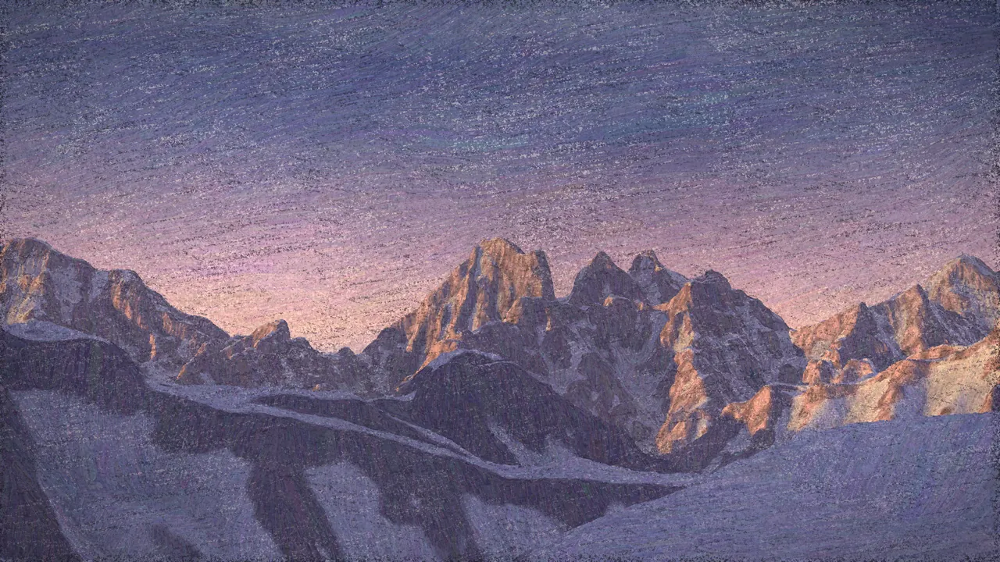
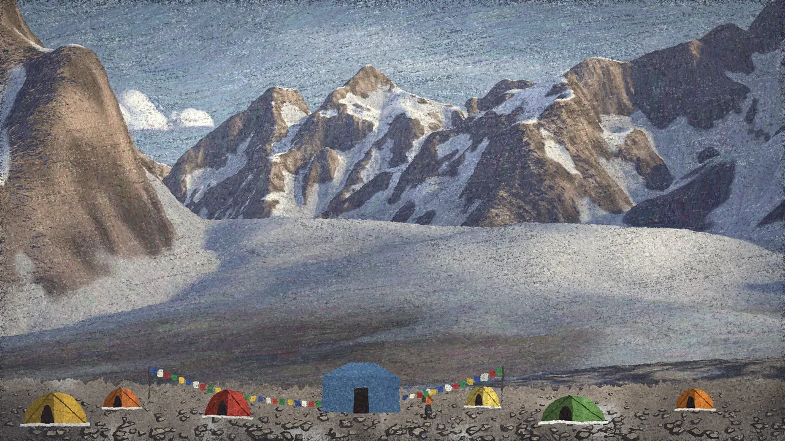
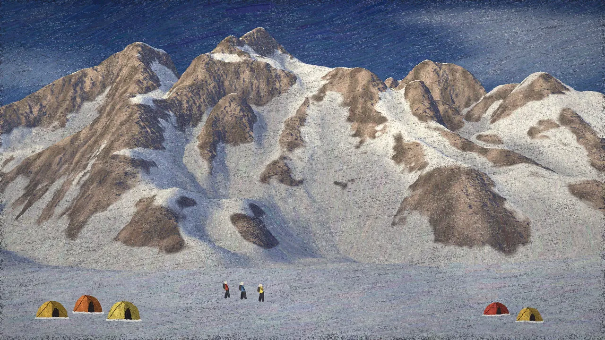
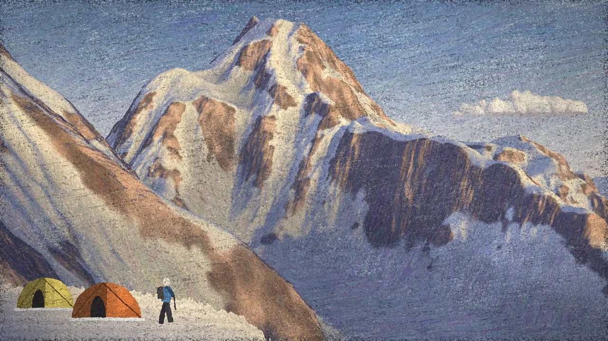
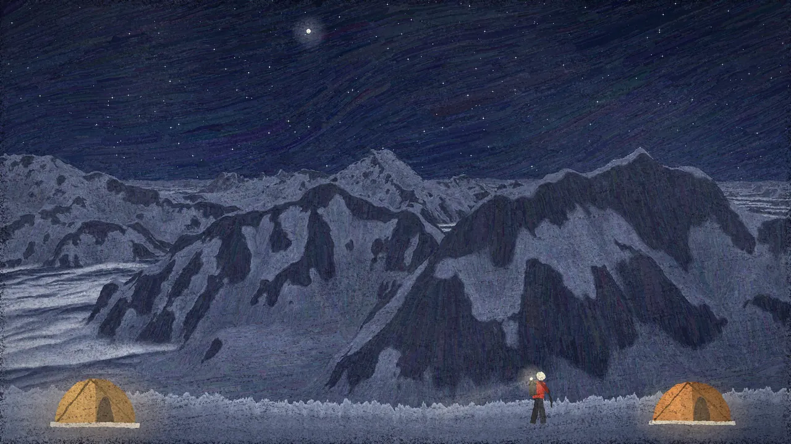
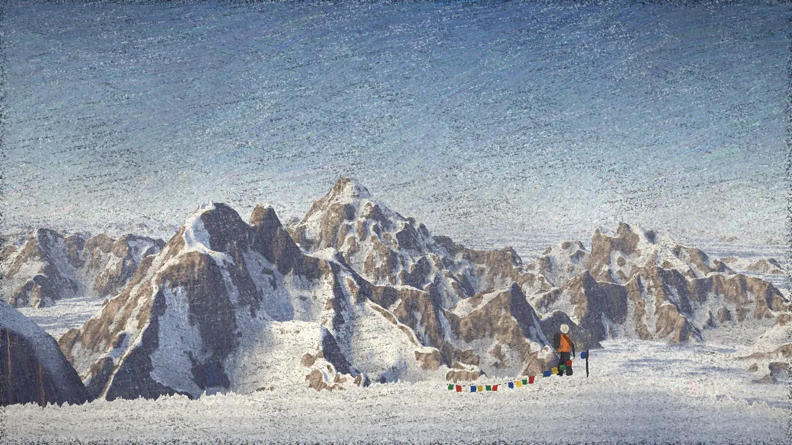
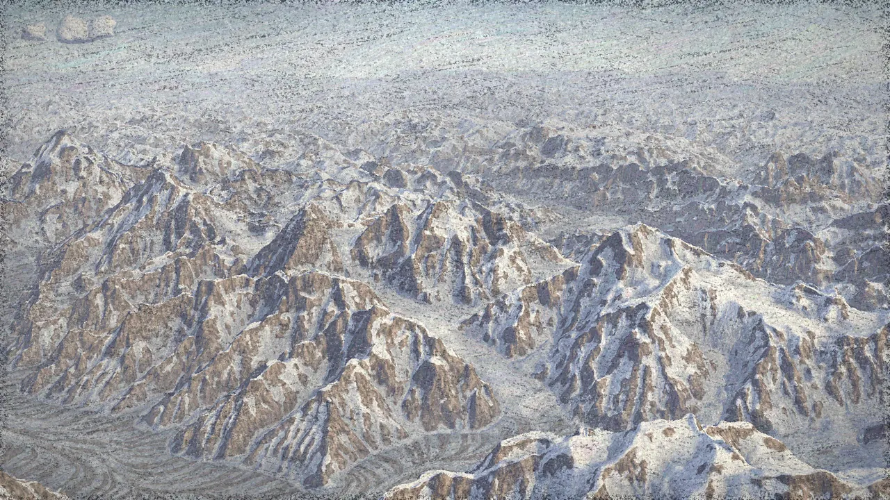
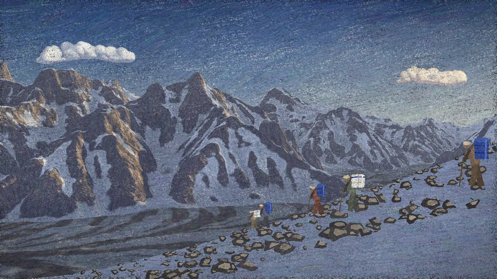

El vecino ancho
Asoma en el borde del macizo, al otro lado del glaciar. Su cresta de tres cumbres mide casi un kilómetro y medio, y desde la cima del G II se ve a 10 km, al noroeste, delante del K2.
A 10 km del G II1.ª ascensión 1957
K4 · 8 035 m · Karakórum
La pirámide de nieve del fondo del Baltoro, y la caravana que carga la expedición hasta su pie.
Lámina I · El macizo desde el Gondogoro La, a 5 585 m, con el último sol de la tarde.
En cifras
35° 45′ 27″ N · 76° 39′ 09″ E
En la frontera entre Gilgit-Baltistán (Pakistán) y Xinjiang (China)
Desde el Gondogoro La, el paso que cierra el Baltoro por el sur, el grupo entero de los Gasherbrum recibe el último sol. Del Broad Peak, a la izquierda, al G I, a la derecha. En medio, la pirámide del G II.
Asoma en el borde del macizo, al otro lado del glaciar. Su cresta de tres cumbres mide casi un kilómetro y medio, y desde la cima del G II se ve a 10 km, al noroeste, delante del K2.
A 10 km del G II1.ª ascensión 1957
Su cara oeste se enciende al atardecer sobre Concordia, y de ahí viene la traducción popular de «Gasherbrum» como «pared luminosa». En balti el nombre suena distinto: rgasha, «hermosa», y brum, «montaña».
A 3,4 km del G II1.ª ascensión 1958
A menos de un kilómetro de la cima del G II, unido a ella por una arista. Lo subió por primera vez, en 1975, la misma expedición polaca que llevó a dos mujeres a la cumbre del G II.
A 1 km del G II1.ª ascensión 1975
La forma más limpia del grupo: una pirámide de nieve con aristas regulares. Su ruta normal, el espolón suroeste, se considera una de las más asequibles entre los ochomiles, y eso la ha convertido en una de las cumbres más visitadas del Karakórum.
Decimotercera de la Tierra1.ª ascensión 1956
El más alto del grupo queda retrasado hacia el este, sobre la frontera china. Comparte con el G II el campo base y el primer campamento, y muchas expediciones intentan los dos en la misma temporada.
A 5,4 km del G II1.ª ascensión 1958
| Cima | Altura | Comparación de altura | Al G II |
|---|---|---|---|
| Gasherbrum I | 8 080 m | 5,4 km | |
| Gasherbrum II | 8 035 m | — | |
| Gasherbrum III | 7 952 m | 1 km | |
| Gasherbrum IV | 7 925 m | 3,4 km | |
| Gasherbrum II Este | 7 772 m | 1,4 km | |
| Gasherbrum V | 7 147 m | 4,4 km | |
| Gasherbrum VI | 6 979 m | 5,8 km |
Ninguna expedición llega sola al Gasherbrum II. Todo lo que hay en el campo base, de la última carpa al último bidón, ha subido a la espalda de un porteador balti.
Desde Askole, el último pueblo del valle del Braldu, hasta el campo base hay unos ocho días de marcha, casi todos sobre los 63 km del glaciar del Baltoro. Cada porteador carga unos 25 kilos: un bidón azul, un fardo de rafia atado en cruz o una caja con su número pintado.
Cobran por jornada. Al llegar al campo base dejan la carga, recogen su paga y emprenden la vuelta hacia Askole. Desde ahí siguen los alpinistas y los porteadores de altura.
≈ 25 kg por carga8 jornadas63 km de glaciar
Cada carga lleva su número, y cada porteador responde de la suya hasta el campo base.
Un día de jeep desde Skardu hasta Askole y luego a pie por el Baltoro, sobre las franjas de morrena que rayan el glaciar. En Concordia, donde se cruzan los glaciares bajo el K2, el camino gira hacia el glaciar Abruzzi, que sube hasta el campo base que comparten el G I y el G II.
La marcha es la misma que lleva al Gasherbrum I.
En los campamentos del Baltoro, al caer la noche, los porteadores suelen juntarse a cantar canciones baltis y a marcar el ritmo golpeando los bidones vacíos. El balti es una lengua de raíz tibetana, y Baltistán, el país balti, se conoce como el «pequeño Tíbet».
Por el espolón suroeste: 9 km de recorrido y 2 915 m de desnivel entre el campo base y la cima, con cuatro campamentos por el camino.
Sobre la morrena del glaciar Abruzzi, al pie de la cascada de hielo del glaciar Gasherbrum Sur. Desde aquí la ruta sube hacia el norte, cruza el circo y trepa por el espolón suroeste hasta la pirámide.
El glaciar Gasherbrum Sur se derrumba hacia el Abruzzi en un laberinto de grietas y seracs. Es el mismo laberinto que lleva al G I, y se cruza de madrugada, cuando el frío sujeta los puentes de nieve.
+760 m5 kmGrietas y seracs
Una travesía llana por el circo hasta el pie del espolón, a unos 5 950 m, y después la cresta curva que los alpinistas llaman Banana Ridge, hasta una repisa colgada sobre el vacío.
+530 m1,6 kmAludes en el circo
La arista sube recta, con tramos de roca y nieve dura donde se instalan cuerdas fijas, hasta el hombro que queda bajo la pirámide cimera.
+600 m0,7 kmPendiente y viento
Una rampa corta hasta el último campamento, donde arranca la travesía. Muchas expediciones se lo saltan y salen hacia la cima directamente desde el Campo 3.
+415 m0,4 kmAltura
Una larga diagonal hacia el este por debajo de la pirámide, expuesta a aludes, y después la subida final por su vertiente este hasta la cima. La bajada se hace el mismo día.
+610 m1,3 kmAludes, frío, cansancio
Curvas de nivel cada 200 m y maestras cada 1 000 m, trazadas sobre el modelo Copernicus GLO-90. No hay coordenadas publicadas de los campos: están situados a partir de las descripciones de la ruta, con un margen de unos 200 a 300 m.
Las carpas se levantan sobre la morrena, y en temporada conviven aquí las expediciones al G I y al G II. Encima asoma la pirámide del G II, entre el G III y el G II Este, por encima de la cascada de hielo.
Antes de pisar la cascada, muchos equipos celebran una puja, la ceremonia del altar de piedras y las banderas de oración que trajeron los sherpas.
Una cuenca de nieve encerrada por el G II, el G III y el G II Este. Por el centro sube el espolón suroeste, la ruta normal, y una cordada cruza el circo hacia su pie. Arriba se distinguen las repisas del Campo 3 y del Campo 4.
Este campo también es el primero de la ruta al G I: a partir de aquí, cada expedición tira hacia su montaña.
La luz baja de la tarde enciende la cara oeste del Gasherbrum I, al otro lado del circo, que abajo ya está en sombra. Las carpas ocupan una repisa estrecha del espolón, y cada una se ata a la nieve para que el viento no se la lleve.
Medianoche bajo la pirámide cimera. Los valles duermen bajo un mar de nubes, y la luna, baja en el sursuroeste, alumbra el Gasherbrum VI, el Chogolisa y el Gasherbrum V. Las cordadas que van a cumbre salen de aquí, o del Campo 4, un poco más arriba, con el frontal encendido.
El aire tiene apenas un 40 % del oxígeno del nivel del mar.
Un pico de nieve sobre la frontera entre Pakistán y China. Hacia el noroeste, el Broad Peak a 10 km y, a su derecha, el K2 a 19 km, 576 m más alto. Alrededor, el Karakórum asoma sobre un mar de nubes.
El aire tiene un tercio del oxígeno del nivel del mar. Llegar es solo la mitad del trabajo, porque queda toda la bajada.
Cae la noche sobre la cumbre. Siglo y medio de gente subiendo hacia ella, de un topógrafo a doscientos kilómetros a tres alpinistas en pleno invierno.
Thomas George Montgomerie, del Gran Levantamiento Trigonométrico de la India, numera desde muy lejos las cumbres del Karakórum. Esta es la cuarta.
La expedición de Martin Conway remonta el Baltoro y bautiza Concordia, el cruce de glaciares donde la caravana gira hacia los Gasherbrum.
Luis Amadeo de Saboya explora el alto Baltoro con el fotógrafo Vittorio Sella. El glaciar donde se monta el campo base lleva su nombre.
La expedición austriaca de Fritz Moravec sube por el espolón suroeste. El 7 de julio, tras un vivac por encima del último campamento, Moravec, Josef Larch y Hans Willenpart llegan a la cima. Es el segundo ochomil del Karakórum escalado, después del K2.
El 12 de agosto, Halina Krüger-Syrokomska y Anna Okopińska, de la expedición polaca de Wanda Rutkiewicz, llegan a la cumbre: es la primera ascensión de un ochomil por una cordada solo de mujeres.
El 1 de julio, Jerzy Kukuczka y Wojciech Kurtyka abren en estilo alpino una vía nueva por la arista sureste, pasando por la cima del G II Este. Ese mismo mes suben el G I por otra vía nueva.
Reinhold Messner y Hans Kammerlander suben el G II, bajan por otra vertiente, cruzan el circo y suben el G I sin volver al campo base. Werner Herzog los filma.
El 2 de febrero, a las 11:28, Simone Moro, Denis Urubko y Cory Richards llegan a la cima por la ruta normal. Es la primera ascensión invernal de un ochomil de Pakistán. Al bajar, un alud los sepulta y Moro desentierra a sus compañeros.
La expedición de Wanda Rutkiewicz, organizada en el Año Internacional de la Mujer, tenía permiso para el G III. Lo subieron el 11 de agosto. Al día siguiente, Halina Krüger-Syrokomska y Anna Okopińska llegaban a la cima del G II por la vía de los austriacos: el primer ochomil subido por una cordada solo de mujeres.
Messner y Kammerlander encadenan el G II y el G I sin volver al campo base. Herzog lo cuenta en «Gasherbrum – Der leuchtende Berg».
La hora de la primera cumbre invernal, según el relato de los tres alpinistas.
Bajaban de la primera invernal del Karakórum cuando un alud los alcanzó y los dejó medio enterrados. Simone Moro, el menos cubierto, se desencordó y sacó de la nieve a Denis Urubko y a Cory Richards. La foto que Richards se hizo después, con la cara cubierta de nieve, dio la vuelta al mundo.
Unos cuatro días para abrir en estilo alpino la arista sureste y bajar, sin cuerdas fijas ni campamentos montados.
Moravec, Larch y Willenpart decidieron jugárselo todo a un ataque de dos días. Pasaron la noche en un vivac, por encima del último campamento, y al día siguiente tardaron unas siete horas en llegar a la cima. Moravec y Larch volvieron con congelaciones leves.
Ocho vistas pintadas por programa a pincel seco sobre el relieve real. La forma de cada montaña sale del modelo Copernicus; la luz, del sol a 35,7° N a la hora de cada lámina, con sus sombras exactas.








Pintadas por programa a pincel seco sobre el relieve real, con el motor del G II reconstruido a 5 120 × 2 880 píxeles. Las cámaras están en la posición y la altura de cada campo de la ruta normal, situados a partir de las descripciones publicadas. Las láminas VII y VIII son nuevas, con la misma tubería; la VIII añade al motor la figura del porteador.
Copernicus DEM GLO-90. © DLR e.V. 2010-2014 y © Airbus Defence and Space GmbH 2014-2018, provisto bajo COPERNICUS por la Unión Europea y la ESA. Teselas reempaquetadas por el proyecto Vershiny. Cotas oficiales impuestas a las cimas.
Identidad «Caravana»: la carga de los porteadores como contenedor. Lona, fichas de carga, fardos de rafia, la tapa de un bidón y la morrena del Baltoro, generados por programa. Tipografías Big Shoulders Stencil y Literata, con licencia SIL Open Font.